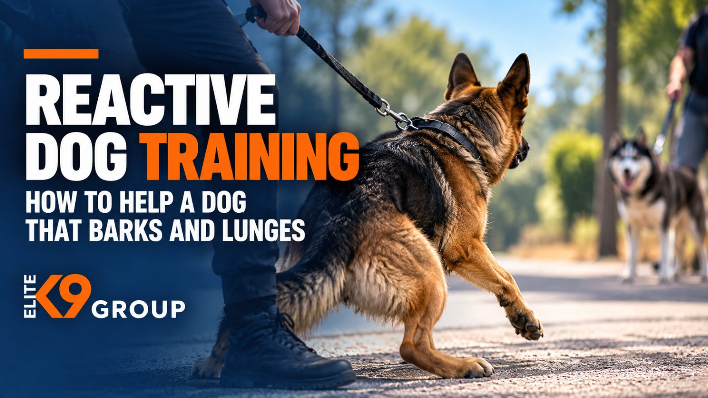

Elite K9 Group often hears a familiar concern from dog owners: "My dog behaves perfectly at home, so why does every walk turn into barking, pulling, and lunging?" For many owners, these reactions are confusing and frustrating. A dog that listens to commands indoors may suddenly become difficult to manage when another dog, unfamiliar person, or moving object appears. But reactivity isn't always a sign of aggression or disobedience. It can develop from fear, frustration, excitement, or difficulty coping with certain situations. That's why reactive dog training should focus on understanding what causes these intense responses rather than simply stopping the barking. In this guide, we'll explain what dog reactivity means, why dogs become reactive, how to manage challenging situations safely, and why professional behavioral training can help owners achieve more manageable everyday interactions. ##What Is a Reactive Dog? A reactive dog responds unusually intensely to certain triggers in its environment. These triggers might include other dogs, unfamiliar people, bicycles, vehicles, unexpected noises, or movement. For example, a dog might walk calmly until it notices another dog approaching. Within seconds, it begins barking, pulling against the leash, or struggling to focus on its owner. Common signs of dog reactivity include: Excessive barking when encountering specific triggers. Lunging or pulling toward dogs, people, or moving objects. Whining, jumping, or becoming overly excited. Fixating intensely on another animal or person. Difficulty responding to familiar commands. Stiff body language or visible tension. Taking a long time to settle after an encounter. Not every reactive dog behaves the same way. Some become vocal and highly active, while others freeze or display subtle signs of discomfort before reacting. Understanding these differences is important because the most appropriate training approach depends on the individual dog and the reasons behind its behavior. ##Reactive Dog vs. Aggressive Dog: What's the Difference? A common misconception is that a dog that barks or lunges must be aggressive. However, reactivity and aggression are not interchangeable. Reactivity describes an intense response to something in the environment. That response may be driven by fear, frustration, excitement, or aggression. For example, a friendly dog might bark and pull because it wants to greet another dog but cannot reach it. Another dog might react in a similar way because it feels threatened and wants the other animal to move away. Although the outward behavior may look similar, the motivation is different. Aggression may involve threatening or harmful behavior, including attempts to bite. Some reactive dogs also display aggression, and intense reactions can create genuine safety risks. Determining the difference requires looking at body language, behavior patterns, and the circumstances surrounding each reaction. If your dog displays threatening behavior, growling, snapping, or biting, our guide on how to stop dog aggression explains why professional behavioral assessment is especially important. ##Why Do Dogs Become Reactive? Understanding the cause of reactivity is one of the most important parts of developing an effective dog reactivity training plan. Different dogs may react for different reasons, even when their behavior appears nearly identical. ###Fear and Anxiety Some dogs become reactive because they feel uncomfortable or threatened. A frightened dog may bark or lunge to create distance from another animal or person. If the trigger moves away after the reaction, the dog may learn that barking or lunging helps it escape an uncomfortable situation. Training for fear-related reactivity should prioritize safety and helping the dog develop more comfortable responses. ###Frustration and Overexcitement Some reactive dogs are highly social or excited rather than fearful. A dog that wants to approach another dog may become frustrated when restrained by a leash. This frustration can lead to barking, jumping, pulling, and intense vocalization. Although the dog's intention may not be aggressive, the behavior can still make interactions difficult. ###Previous Negative Experiences An unpleasant encounter can influence how a dog responds to similar situations later. For example, a dog frightened by another animal may become anxious when approaching unfamiliar dogs in the future. However, not every reactive dog has experienced trauma. Behavior develops through a combination of experiences, temperament, learning, and environmental influences. ###Limited Experience With Different Environments Dogs that have had limited positive exposure to unfamiliar animals, people, sounds, or environments may find certain situations overwhelming. Appropriate social experiences can be helpful, but forcing a reactive dog into crowded environments is not necessarily beneficial. The dog's comfort and ability to cope should guide the process. ###Stress or Physical Discomfort Stress, pain, and medical conditions may also influence reactivity. A dog experiencing discomfort may become less tolerant of unfamiliar interactions. If your dog's behavior changes suddenly or becomes noticeably more intense, arrange a veterinary assessment to investigate possible medical causes. ##How to Train a Reactive Dog Safely If you're wondering how to train a reactive dog, begin by understanding that reactivity rarely improves through one command or a quick correction. Effective training generally involves managing triggers, understanding the dog's emotional response, and developing more appropriate behavior through a structured approach. While individualized behavioral work is best guided by a qualified professional, owners can take several practical steps to make everyday situations safer. ###1.Identify Your Dog's Triggers Pay attention to what happens before your dog reacts. Does the reaction begin when another dog approaches? Is it worse in crowded environments? Does your dog respond differently to people, bicycles, or unfamiliar noises? Observing these patterns without deliberately provoking a reaction can provide valuable information for a professional assessment. ###2.Maintain a Comfortable Distance Distance can be an important management tool. If your dog becomes overwhelmed when another dog approaches, maintaining more space may help prevent the reaction from escalating. Choosing quieter walking routes, changing direction, or avoiding narrow paths can make encounters easier to manage. The goal is not to avoid all training opportunities permanently, but to prevent unnecessary stressful encounters while building an appropriate training plan. ###3.Recognize Early Signs of Discomfort Many dogs display subtle changes before barking or lunging. These may include a stiff posture, intense staring, sudden stillness, or difficulty looking away from a trigger. Recognizing these signs can help owners respond before the dog becomes overwhelmed. Our article about understanding dog body language explains how to interpret common signals in context. ###4.Avoid Punishment and Forced Interactions Punishing a dog for reacting does not necessarily change the emotion causing the behavior. Yelling, physical corrections, or forcing a dog to remain close to something frightening may increase stress and worsen the situation. Humane, reward-based training approaches aim to encourage appropriate responses without relying on fear or intimidation. ###5.Get Professional Behavioral Guidance Persistent reactivity can be difficult to address without understanding its underlying cause. A qualified professional can assess behavior patterns, evaluate safety concerns, and develop a training plan suited to the dog's individual needs. When reactivity involves biting, severe aggression, or significant risk, veterinary behavioral involvement may also be necessary. ##Understanding Your Reactive Dog's Threshold One of the most useful concepts in reactive dog training is the dog's reaction threshold. A threshold describes the point at which a situation becomes too difficult for the dog to handle comfortably. Imagine walking your dog past another animal. At a considerable distance, your dog might notice the other animal but remain relaxed and responsive. As the distance decreases, your dog may begin staring, pulling, or showing tension. Eventually, the situation may become overwhelming, resulting in barking or lunging. Once the dog is highly distressed or excited, learning and responding to familiar cues may become more difficult. An appropriately qualified trainer can assess these patterns and help determine how to work with triggers at manageable levels. Training should not involve repeatedly pushing a dog into situations that provoke intense reactions. ##How to Train a Leash Reactive Dog Leash reactivity is particularly challenging because walks involve unpredictable encounters. Some dogs react intensely to other animals only while restrained. Others display similar behavior both on and off leash. The leash can limit the dog's ability to move away or approach naturally, potentially increasing fear or frustration. When considering how to train a leash reactive dog, focus first on safe management. Avoid forcing greetings with unfamiliar dogs, maintain appropriate distances, and choose environments where encounters are easier to control. A secure, properly fitted walking setup may also help prevent accidental escapes, although equipment alone does not resolve reactivity. Professional dog training can address leash manners, attention, and the underlying behavioral responses that make walks difficult. The objective is to help the dog develop more manageable reactions rather than simply requiring it to remain quiet while overwhelmed. ##Why Professional Reactive Dog Training Matters Reactive behavior is not a problem that always responds well to generic training advice. A dog reacting from fear may need a different approach from one reacting because of frustration or overexcitement. This makes professional evaluation an important part of effective reactive dog training. ###Identifying the Underlying Problem A qualified professional looks beyond barking and lunging. Behavioral assessment may consider triggers, previous experiences, body language, daily routines, and the dog's response to different environments. Understanding the underlying factors helps determine which training strategies are appropriate. ###Developing an Individualized Training Plan Professional behavior modification should be adapted to the dog rather than relying on a universal training formula. Depending on the circumstances, a plan may involve environmental management, reinforcement of desirable behaviors, gradual desensitization, and counterconditioning. These techniques aim to help dogs develop more manageable responses in carefully controlled situations. At Elite K9 Group, our professional behavioral modification training addresses challenges involving reactivity, fear-related responses, excessive barking, and uncontrolled leash behavior. We begin by evaluating the individual dog to better understand the behavior and identify suitable training options. ###Helping Owners Communicate More Effectively A professional trainer works not only with the dog but also with the owner. Learning to recognize triggers, manage challenging environments, and respond consistently is an important part of lasting progress. Basic dog obedience training can support attention, leash manners, and communication. However, obedience commands alone may not address the fear or frustration behind a dog's reactions. Behavioral training should consider those underlying causes. ###Setting Realistic Expectations Progress does not always mean that a reactive dog will become comfortable with every person or animal it encounters. For some dogs, improvement means fewer intense reactions. For others, it may involve recovering more quickly after noticing a trigger or maintaining appropriate behavior at a greater variety of distances. A credible professional training plan should establish realistic goals and adjust them as the dog progresses. ##Common Reactive Dog Training Mistakes One common mistake is assuming that repeated exposure will eventually make a reactive dog comfortable. Taking an overwhelmed dog into busy parks or forcing close encounters can sometimes increase stress instead. Another mistake is treating every reaction as deliberate disobedience. A dog that struggles to follow commands during an intense encounter may be too distressed or excited to respond reliably. Owners may also focus only on stopping barking rather than understanding why it happens. Finally, waiting until reactions become dangerous before seeking help can make everyday situations increasingly difficult to manage. Professional guidance can help owners avoid inappropriate training approaches and establish a plan suited to their dog's needs. ##Can Reactive Dogs Learn to Stay Calm Around Other Dogs? Many reactive dogs can improve with appropriate training and management. However, improvement doesn't necessarily mean every dog will enjoy close contact with unfamiliar animals. For some dogs, a reasonable goal is being able to notice another dog from a comfortable distance without barking or lunging. Others may gradually become more comfortable walking through environments containing normal distractions. Individual results depend on the dog's behavioral history, underlying motivation, training approach, and consistency of management. Professional dog reactivity training can help establish appropriate expectations without forcing unnecessary interactions. ##How Long Does Reactive Dog Training Take? There is no universal timeline. Some dogs may demonstrate early improvement in manageable environments, while others require longer-term training and continued management. Progress depends on factors such as the severity of reactions, underlying emotional responses, learning history, health, and environmental conditions. Rather than judging progress only by how quickly barking disappears, owners should also consider changes in recovery time, stress levels, and the ability to handle ordinary encounters. A professional evaluation can help determine realistic training goals for the individual dog. ##Frequently Asked Questions About Reactive Dog Training ###What Is the Best Way to Train a Reactive Dog? The most appropriate approach depends on why the dog reacts. Training may involve managing triggers, maintaining appropriate distances, reward-based learning, and carefully structured behavior modification. Professional assessment is valuable because dogs reacting from fear, frustration, or excitement may require different strategies. ###Can You Train a Reactive Dog at Home? Owners can follow safe management practices and reinforce skills recommended by a qualified professional. However, severe reactivity, escalating behavior, and situations involving a bite risk should not be addressed through unsupervised experimental training. Individualized professional guidance can help determine which activities are appropriate. ###How Do You Train Reactive Dogs Around Other Dogs? Training should begin with understanding each dog's triggers, emotional responses, and level of risk. Forced introductions are generally inappropriate for dogs that become overwhelmed. Qualified professionals can help develop controlled, gradual behavior-modification plans and teach owners how to manage encounters safely. ###Is Leash Reactivity the Same as Aggression? Not necessarily. A leash reactive dog may bark or lunge because of fear, excitement, frustration, or aggression. Similar behaviors can have different causes, so the dog's body language and overall history should be considered. Professional evaluation is particularly important when the behavior involves threatening actions or bite risk. ###Should I Let My Reactive Dog Meet Other Dogs? Not every reactive dog benefits from greetings with unfamiliar animals. Some are more comfortable maintaining distance, while others may eventually tolerate carefully managed interactions. Forcing contact can increase stress and potentially create dangerous encounters. A qualified behavior professional can help determine whether social interaction is appropriate. ###When Should I Hire a Dog Trainer for Reactivity? Consider professional guidance when barking, lunging, or pulling regularly interferes with walks or other activities. Seeking help becomes especially important if reactions are intensifying, your dog is difficult to manage safely, or aggressive behavior is involved. Sudden behavioral changes should also prompt veterinary assessment. ##Get Professional Reactive Dog Training With Elite K9 Group Living with a reactive dog can make everyday activities challenging, but understanding the behavior and choosing an appropriate training approach can help make those situations more manageable. At Elite K9 Group, we offer professional dog training and behavioral modification services for owners dealing with reactivity, fear-related behavior, uncontrolled leash responses, and other behavioral challenges. Our training process begins with evaluating the individual dog to understand its behavior and identify appropriate training options. Whether your dog struggles around unfamiliar animals, barks excessively during walks, or becomes overwhelmed in distracting environments, our team can discuss the challenges you're experiencing and help you explore suitable next steps. We recognize that meaningful progress depends on understanding the dog, establishing realistic goals, and helping owners develop clearer communication and consistent training routines. Visit Elite K9 Group: 13238 Riverside Dr, Sherman Oaks, CA 91423. For more professional dog training content and updates, follow Elite K9 Group on Instagram. If you're struggling with your dog's reactivity and want professional guidance, our team can help you discuss the available training options. Book Your Free Behavior Consultation* and tell us about your dog's behavior.
